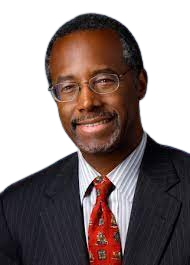

“I am convinced that knowledge is power - to overcome the past, to change our own situations, to fight new obstacles, to make better decisions.” - Ben Carson
Benjamin Solomon Carson Sr. (born September 18, 1951) is an American retired neurosurgeon, academic, author, and politician who served as the 17th United States Secretary of Housing and Urban Development from 2017 to 2021. A pioneer in the field of neurosurgery, he was a candidate for President of the United States in the 2016 Republican primaries.[2][3][4] Carson is one of the most prominent Black conservatives in America.[5]